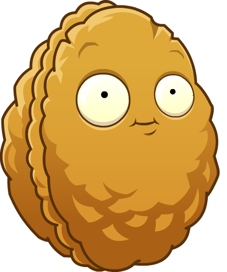
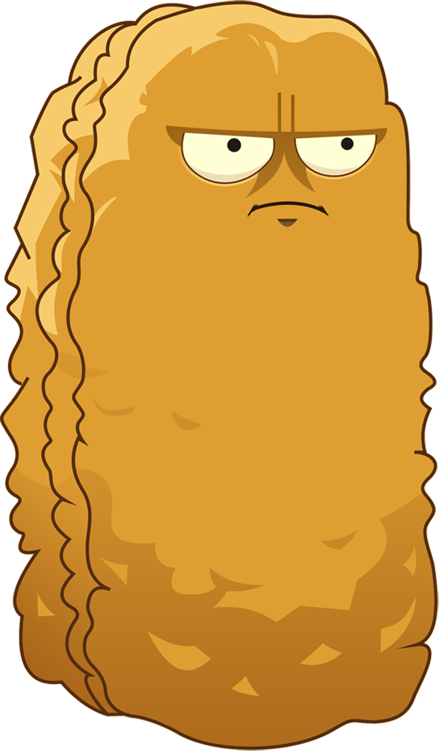
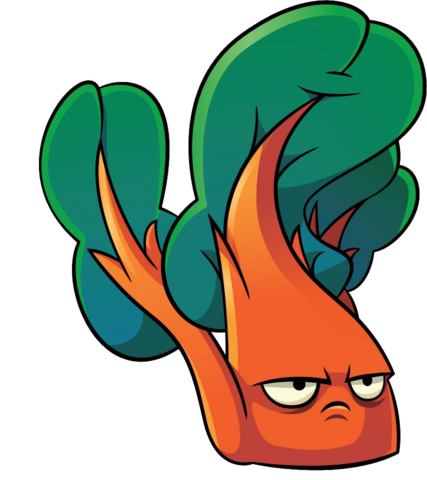
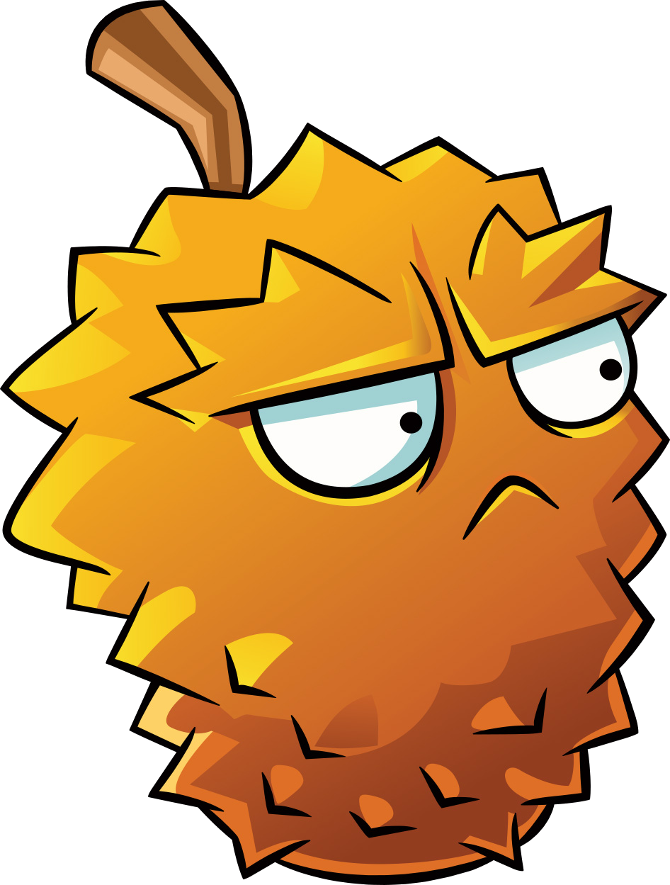
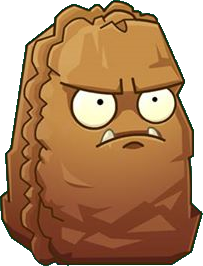

While there are plants attacking the zombies, there are also plants that help make it harder for the zombies to go all the way to their houses. In addition to defending agains the zombies, some have passive\extra abilities (ex. attacking, flinging them back, etc.). DEFENSE! DEFENSE!
|  |  |  |  |  | ||
|
WALL-NUT Wall-nuts have hard shells which you can use to protect your other plants.Toughness: high Recharge: sluggish Cost: 50 |
TALL-NUT Tall-nuts are heavy-duty wall plants that block low flying zombies.Toughness: very high Special: blocks flying objects Recharge: sluggish Cost: 125 |
INFI-NUT Infi-nuts are weaker than Wall-nuts, but they can regain health over time.Toughness: elevated Special: regenerates health over time Recharge: mediocre Cost: 75 |
CHARD GUARD Chard Guards are defensive blockers that can hurl zombies backwards.Toughness: elevated Special: hurls zombies back (x3) Recharge: mediocre Cost: 75 |
ENDURIAN Endurians are defensive plants that deal damage to zombies attacking it.Toughness: elevated Damage: normal Recharge: mediocre Cost: 100 |
PRIMAL WALL-NUT Primal Wall-nuts cost a bit more than typical Wall-nuts, but they can be planted much more quickly.Toughness: high Recharge: fast Cost: 75 |
SWEET POTATO Sweet Potatoes attract zombies from other lanes when they are close by.Toughness: high Recharge: sluggish Cost: 300 |